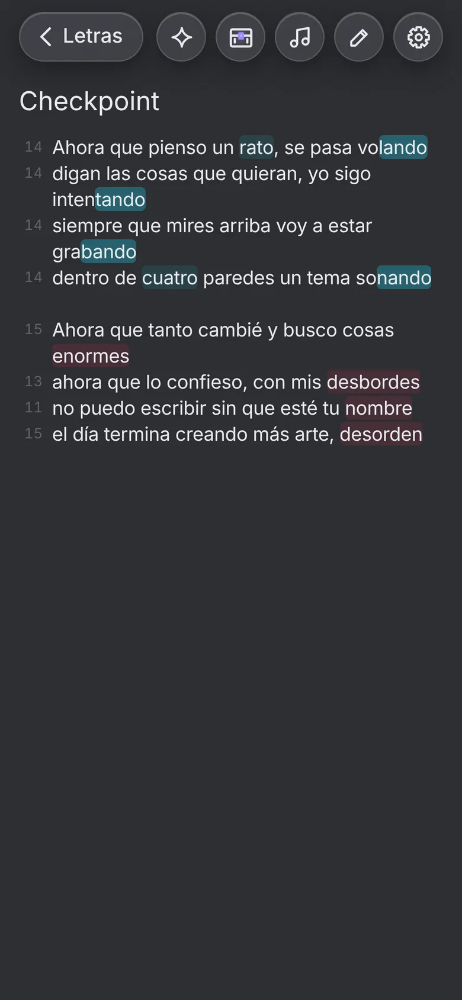
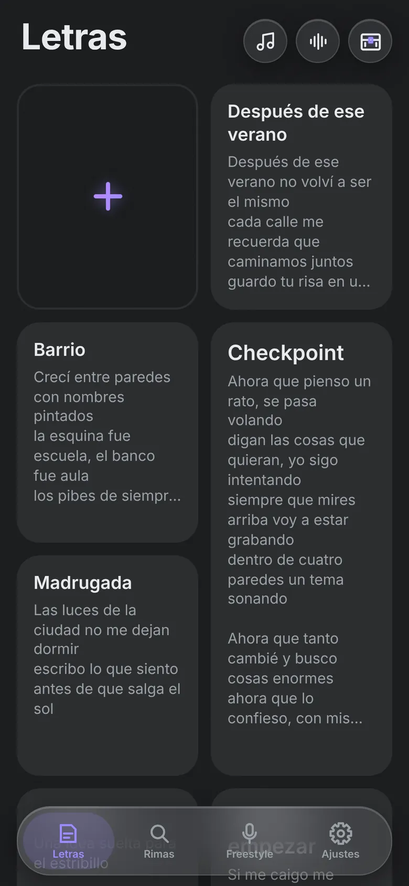
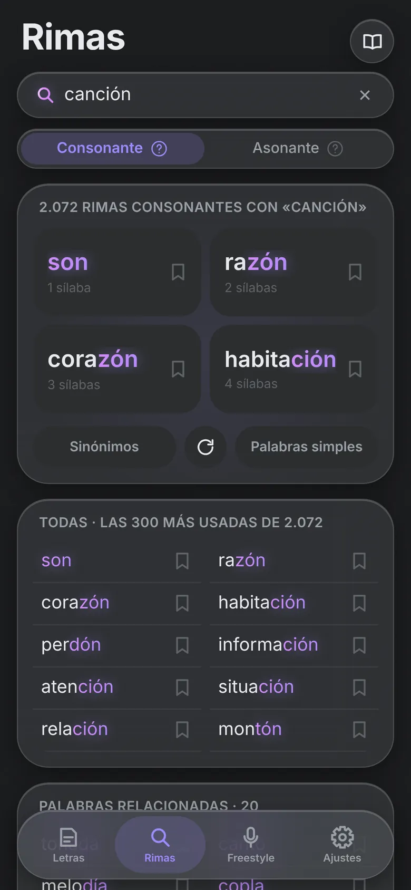
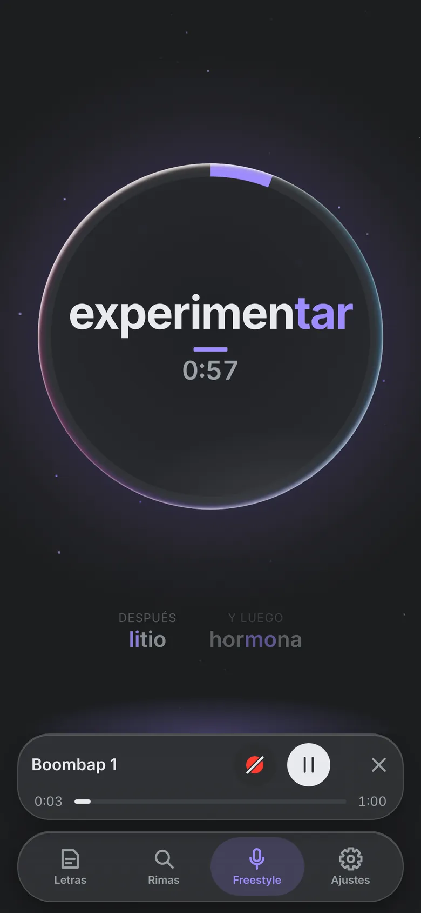
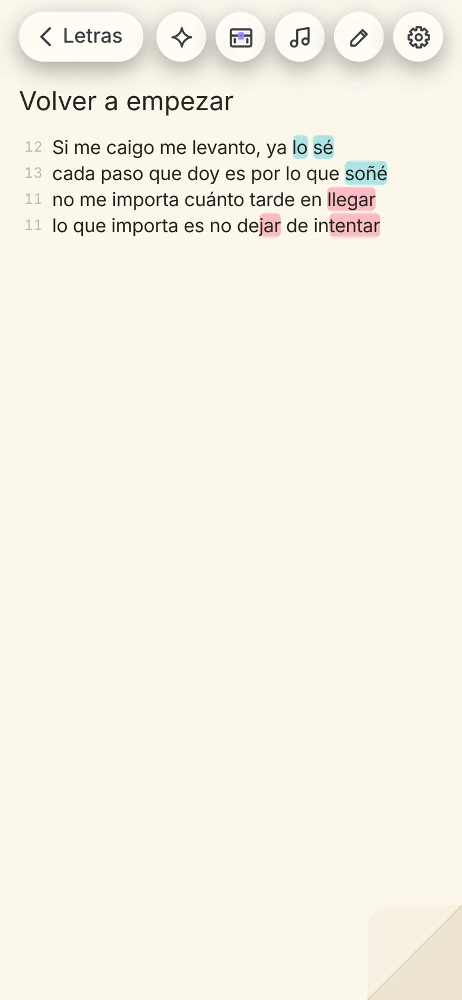
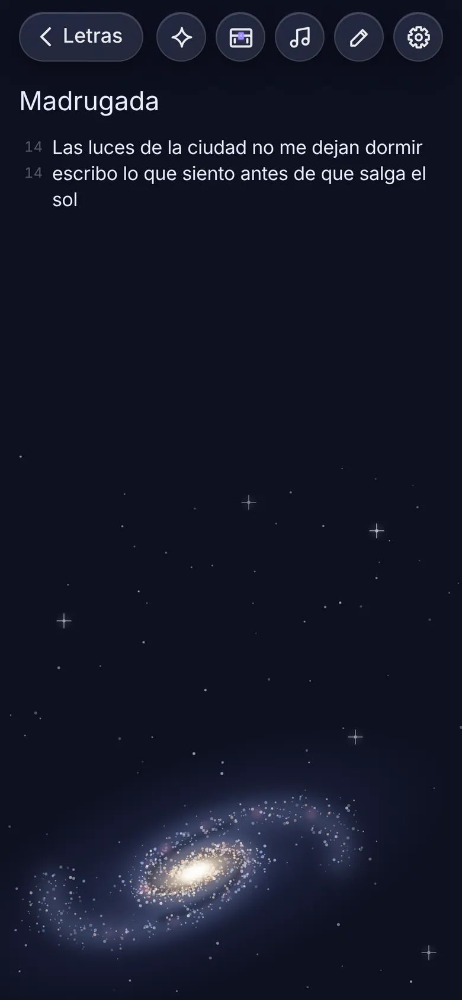
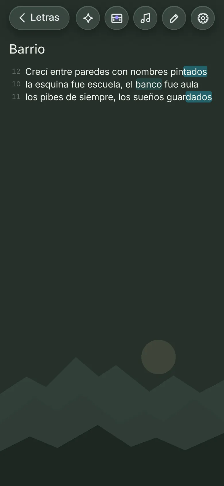

Escribe canciones que riman.
Métrica es la libreta para escribir letras en español: cuenta las sílabas de cada verso, pinta lo que rima mientras escribes y te da ideas cuando te trabas.
Gratis, en español y sin cuentas. Tus letras quedan en tu iPhone y en tu iCloud.

Ve la métrica y la rima mientras escribes.
Cada verso muestra cuántas sílabas tiene, contadas como se cantan, con sinalefa. Las palabras que riman se pintan del mismo color desde la sílaba que más suena: consonante con fondo lleno y asonante más suave.
- Rimas internas y multisilábicas, no solo la última palabra.
- Toca una palabra y aparecen rimas, sinónimos y palabras relacionadas para cambiarla.
- Marca las partes con un toque: [Intro], [Estribillo], [Verso].
- Entiende cómo suenan las palabras en inglés que se usan en las letras.

Encuentra la palabra que falta.
Escribe una palabra y te muestra sus rimas consonantes y asonantes, con las más usadas primero. Un toque en el libro y tienes su definición, aunque la hayas escrito mal.
- Filtra por palabras simples, sinónimos que riman y palabras relacionadas.
- Guarda las que te gusten para tenerlas a mano.
- Funciona sin internet.

Entrena con palabras al ritmo.
Elige un beat y Métrica te va tirando palabras a tiempo, con la sílaba fuerte marcada y las dos que vienen después. Usa los beats de la app, un archivo tuyo o un enlace de YouTube o SoundCloud.
- Boombap, Trap o a capela, con rondas de 1, 1:30 o 2 minutos.
- Toca REC y grábate sobre el beat; la voz queda sincronizada sola.
- Tu música te acompaña también mientras escribes en la libreta.

Una compañera de escritura, no un autor.
Selecciona una frase y Métrica IA te muestra otras maneras de decirla, con la misma rima y una métrica parecida. También puede leer tu letra entera y proponerte qué cambiaría, o darte ideas de qué hablar cuando la hoja está en blanco.
- «¿Cómo lo diría Métrica IA?»: hasta 10 alternativas para una frase.
- «¿Qué cambiaría Métrica IA?»: repeticiones y palabras flojas, sin tocar tu estilo.
- «¿Por dónde empiezo?»: miles de ideas para arrancar, que no gastan tu cuota.
«no puedo escribir sin que esté tu nombre»
en cada renglón que escribo aparece tu nombre
Una libreta que se siente tuya.
Cada letra tiene su propio tema: oscuros, claros y del espacio, con una ilustración sutil que queda quieta mientras escribes. Elige también la fuente, el tamaño y la separación de los renglones.



Y todo lo que necesitas para no perder una idea.
Baúl de frases
Anota esa línea que se te ocurrió en la calle y úsala cuando la necesites.
Widgets
Anota desde la pantalla de inicio, mira tu racha o la palabra del día sin abrir la app.
iCloud, gratis
Tus letras, el baúl y las palabras guardadas, al día en todos tus dispositivos.
Trae tus notas de Keep
Importa tus letras de Google Keep o comparte una nota hacia Métrica.
Acordes
Escribe los acordes arriba de cada verso, transpórtalos y usa la cejilla.
Sin internet
Rimas, sílabas, diccionario y libreta funcionan en modo avión. Tu música, cuando hay señal.
Gratis para escribir. Siempre.
Las rimas, las sílabas y la libreta nunca se bloquean. Si quieres más, elige lo que te sirva.
Métrica
- Libreta con sílabas y rimas pintadas
- Rimas, sinónimos y diccionario
- Freestyle de hasta 2 minutos por ronda
- Grabar tu voz sobre el beat
- Baúl de frases e iCloud
- 20 consultas de Métrica IA por mes
Métrica+
- Todo lo de la versión gratis
- Todos los temas de la libreta y el baúl
- Freestyle ilimitado
- Descargar tus grabaciones en MP3
- Todos los widgets, con tu foto de fondo
- 100 consultas de IA de regalo
Métrica+ IA
- Todo lo de Métrica+
- 300 consultas de Métrica IA por mes
- Paquetes de consultas extra que no vencen
Precios en dólares estadounidenses; en tu país, la App Store los muestra en tu moneda.
Preguntas frecuentes
¿Necesito crear una cuenta?
No. Métrica no tiene cuentas: tus letras quedan en tu iPhone y, si tienes iCloud activado, se sincronizan en tu propia cuenta de iCloud.
¿Métrica IA escribe las canciones por mí?
No es la idea. Te propone otras maneras de decir una frase, te marca qué cambiaría y te da ideas para arrancar, pero la letra la escribes tú. Es opcional y puedes desactivarla en Ajustes.
¿Qué pasa con lo que escribo cuando uso la IA?
Solo se envía el texto necesario para responder tu consulta, sin tu nombre ni tu cuenta, y no lo guardamos. Los detalles están en la política de privacidad.
¿Funciona en Android?
Por ahora solo en iPhone. Mientras tanto, puedes probar la versión web desde cualquier navegador.
¿Cómo cancelo Métrica+ IA?
En el iPhone, abre Ajustes › tu nombre › Suscripciones › Métrica+ IA › Cancelar suscripción.
Tu próxima canción empieza aquí.
Métrica llega muy pronto a la App Store.